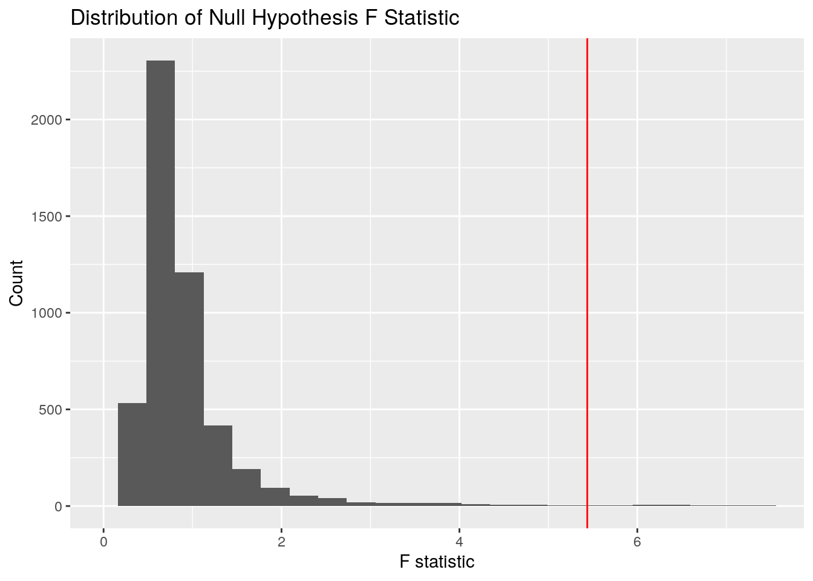
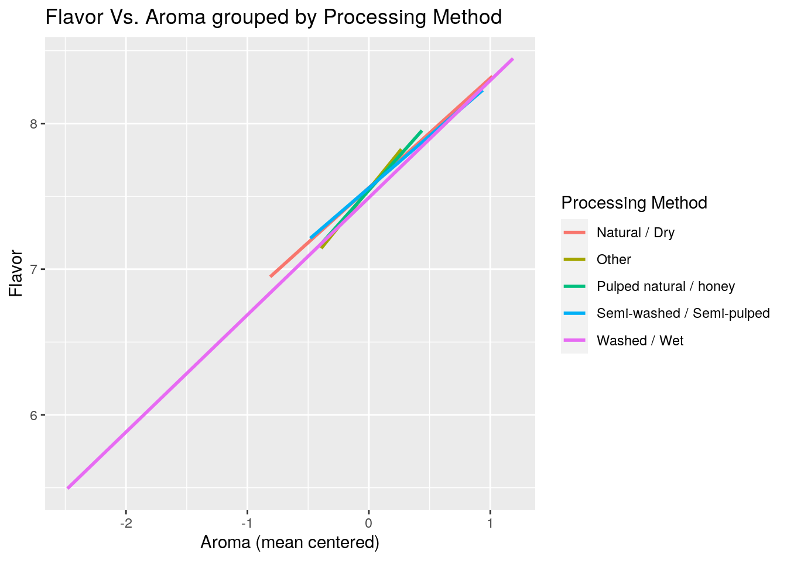
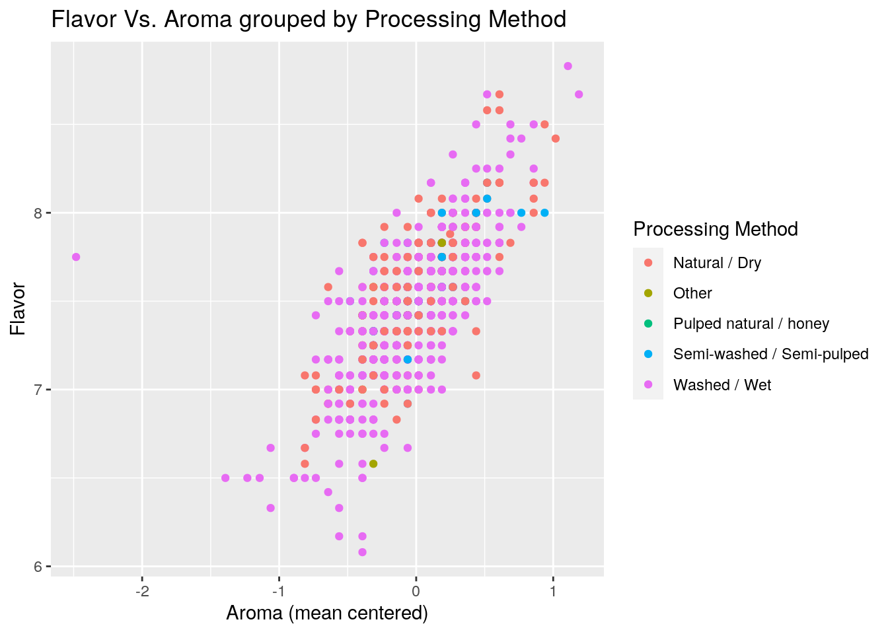
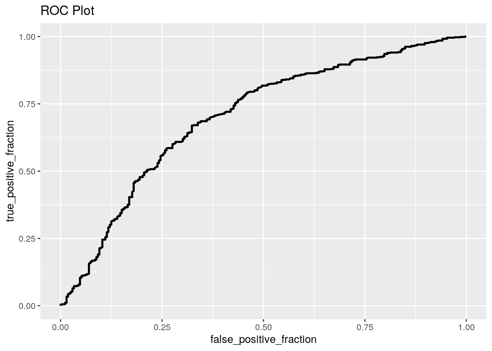
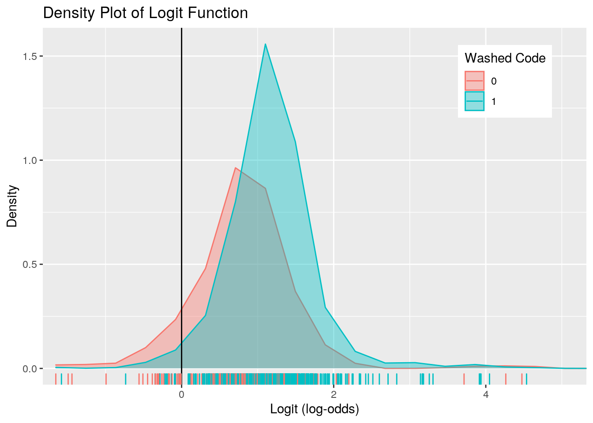

class_diag <- function(probs, truth) {
tab <- table(factor(probs > 0.5, levels = c("FALSE",
"TRUE")), truth)
acc = sum(diag(tab))/sum(tab)
sens = tab[2, 2]/colSums(tab)[2]
spec = tab[1, 1]/colSums(tab)[1]
ppv = tab[2, 2]/rowSums(tab)[2]
f1 = 2 * (sens * ppv)/(sens + ppv)
if (is.numeric(truth) == FALSE & is.logical(truth) ==
FALSE) {
truth <- as.numeric(truth) - 1
}
# CALCULATE EXACT AUC
ord <- order(probs, decreasing = TRUE)
probs <- probs[ord]
truth <- truth[ord]
TPR = cumsum(truth)/max(1, sum(truth))
FPR = cumsum(!truth)/max(1, sum(!truth))
dup <- c(probs[-1] >= probs[-length(probs)], FALSE)
TPR <- c(0, TPR[!dup], 1)
FPR <- c(0, FPR[!dup], 1)
n <- length(TPR)
auc <- sum(((TPR[-1] + TPR[-n])/2) * (FPR[-1] -
FPR[-n]))
data.frame(acc, sens, spec, ppv, f1, auc)
}# Libraries
library(tidyverse)
# Read in datasets
coffee_ratings <- readr::read_csv("https://raw.githubusercontent.com/rfordatascience/tidytuesday/master/data/2020/2020-07-07/coffee_ratings.csv")
coffee <- coffee_ratings %>% select(total_cup_points,
species, country_of_origin, processing_method,
color, aroma, flavor, aftertaste, acidity, body,
balance, uniformity, clean_cup, sweetness, cupper_points,
category_one_defects, category_two_defects, altitude_mean_meters) %>%
filter(!is.na(country_of_origin))
glimpse(coffee)## Rows: 1,338
## Columns: 18
## $ total_cup_points <dbl> 90.58, 89.92, 89.75, 89.00, 88.83, 88.83, 88.75,…
## $ species <chr> "Arabica", "Arabica", "Arabica", "Arabica", "Ara…
## $ country_of_origin <chr> "Ethiopia", "Ethiopia", "Guatemala", "Ethiopia",…
## $ processing_method <chr> "Washed / Wet", "Washed / Wet", NA, "Natural / D…
## $ color <chr> "Green", "Green", NA, "Green", "Green", "Bluish-…
## $ aroma <dbl> 8.67, 8.75, 8.42, 8.17, 8.25, 8.58, 8.42, 8.25, …
## $ flavor <dbl> 8.83, 8.67, 8.50, 8.58, 8.50, 8.42, 8.50, 8.33, …
## $ aftertaste <dbl> 8.67, 8.50, 8.42, 8.42, 8.25, 8.42, 8.33, 8.50, …
## $ acidity <dbl> 8.75, 8.58, 8.42, 8.42, 8.50, 8.50, 8.50, 8.42, …
## $ body <dbl> 8.50, 8.42, 8.33, 8.50, 8.42, 8.25, 8.25, 8.33, …
## $ balance <dbl> 8.42, 8.42, 8.42, 8.25, 8.33, 8.33, 8.25, 8.50, …
## $ uniformity <dbl> 10.00, 10.00, 10.00, 10.00, 10.00, 10.00, 10.00,…
## $ clean_cup <dbl> 10, 10, 10, 10, 10, 10, 10, 10, 10, 10, 10, 10, …
## $ sweetness <dbl> 10.00, 10.00, 10.00, 10.00, 10.00, 10.00, 10.00,…
## $ cupper_points <dbl> 8.75, 8.58, 9.25, 8.67, 8.58, 8.33, 8.50, 9.00, …
## $ category_one_defects <dbl> 0, 0, 0, 0, 0, 0, 0, 0, 0, 0, 0, 0, 0, 0, 0, 0, …
## $ category_two_defects <dbl> 0, 1, 0, 2, 2, 1, 0, 0, 0, 4, 1, 0, 0, 2, 2, 0, …
## $ altitude_mean_meters <dbl> 2075.0, 2075.0, 1700.0, 2000.0, 2075.0, NA, NA, …This data measures various aspects of coffee tasting from a wide selection of different brews. Most of the variables are self explanatory, but we go over them in detail here. Species relates to the species of coffee bean used, of which there are two, Arabica and Robusta. Processing method is how the beans were prepared prior to being brewed, this measure will be condensed later in this project to washed vs. unwashed, with all beans not being prepared in the "Washed / Wet" method being placed into the unwashed group. Country of origin is where the beans were originally grown, and color is the color prior to roasting. The mean altitude measures the average altitude at which the variety of bean is grown, as this can vary slightly. Both category one and two defects measure errors in the preperation of the drink in this specific competition. Finally, all other variables measure aspects of the taste and desirability of the coffee, with the total cup points merely summing these different categories to create on final score. In total there are 18 variables being measured, with 1338 total observations.
# Creating MANOVA
man_cof <- coffee %>% filter(!is.na(processing_method))
man1 <- manova(cbind(aroma, flavor, aftertaste, acidity,
body, balance, cupper_points) ~ processing_method,
data = man_cof)
# Assumptions for MANOVA
library(rstatix)
group <- man_cof$processing_method
DVs <- man_cof %>% select(aroma, flavor, aftertaste,
acidity, body, balance, cupper_points)
# Test multivariate normality for each group (null:
# assumption met)
sapply(split(DVs, group), mshapiro_test)## Natural / Dry Other Pulped natural / honey
## statistic 0.6843214 0.4376285 0.625456
## p.value 1.089693e-21 6.270097e-09 6.902868e-05
## Semi-washed / Semi-pulped Washed / Wet
## statistic 0.6554441 0.85309
## p.value 3.367853e-10 7.530411e-27# Found p < 0.05, assumption violated. No need to
# test homogeneity of covariance matrices
# Summary of MANOVA
summary(man1)## Df Pillai approx F num Df den Df Pr(>F)
## processing_method 4 0.074851 3.1628 28 4644 4.102e-08 ***
## Residuals 1164
## ---
## Signif. codes: 0 '***' 0.001 '**' 0.01 '*' 0.05 '.' 0.1 ' ' 1# Summary of individual ANOVAs
summary.aov(man1)## Response aroma :
## Df Sum Sq Mean Sq F value Pr(>F)
## processing_method 4 0.584 0.145878 1.5173 0.1948
## Residuals 1164 111.910 0.096143
##
## Response flavor :
## Df Sum Sq Mean Sq F value Pr(>F)
## processing_method 4 2.14 0.53501 4.8143 0.0007458 ***
## Residuals 1164 129.36 0.11113
## ---
## Signif. codes: 0 '***' 0.001 '**' 0.01 '*' 0.05 '.' 0.1 ' ' 1
##
## Response aftertaste :
## Df Sum Sq Mean Sq F value Pr(>F)
## processing_method 4 2.151 0.53781 4.6172 0.001059 **
## Residuals 1164 135.582 0.11648
## ---
## Signif. codes: 0 '***' 0.001 '**' 0.01 '*' 0.05 '.' 0.1 ' ' 1
##
## Response acidity :
## Df Sum Sq Mean Sq F value Pr(>F)
## processing_method 4 0.501 0.125195 1.2837 0.2744
## Residuals 1164 113.519 0.097525
##
## Response body :
## Df Sum Sq Mean Sq F value Pr(>F)
## processing_method 4 2.516 0.62898 8.3418 1.237e-06 ***
## Residuals 1164 87.767 0.07540
## ---
## Signif. codes: 0 '***' 0.001 '**' 0.01 '*' 0.05 '.' 0.1 ' ' 1
##
## Response balance :
## Df Sum Sq Mean Sq F value Pr(>F)
## processing_method 4 2.338 0.58440 5.0626 0.0004786 ***
## Residuals 1164 134.366 0.11543
## ---
## Signif. codes: 0 '***' 0.001 '**' 0.01 '*' 0.05 '.' 0.1 ' ' 1
##
## Response cupper_points :
## Df Sum Sq Mean Sq F value Pr(>F)
## processing_method 4 4.517 1.12919 7.387 7.105e-06 ***
## Residuals 1164 177.931 0.15286
## ---
## Signif. codes: 0 '***' 0.001 '**' 0.01 '*' 0.05 '.' 0.1 ' ' 1# Post-hoc test for highpoint meters
pairwise.t.test(man_cof$flavor, man_cof$processing_method,
p.adj = "none")##
## Pairwise comparisons using t tests with pooled SD
##
## data: man_cof$flavor and man_cof$processing_method
##
## Natural / Dry Other Pulped natural / honey
## Other 0.0521 - -
## Pulped natural / honey 0.4644 0.5479 -
## Semi-washed / Semi-pulped 0.8527 0.0719 0.4452
## Washed / Wet 0.0001 0.5418 0.7733
## Semi-washed / Semi-pulped
## Other -
## Pulped natural / honey -
## Semi-washed / Semi-pulped -
## Washed / Wet 0.0270
##
## P value adjustment method: nonepairwise.t.test(man_cof$aftertaste, man_cof$processing_method,
p.adj = "none")##
## Pairwise comparisons using t tests with pooled SD
##
## data: man_cof$aftertaste and man_cof$processing_method
##
## Natural / Dry Other Pulped natural / honey
## Other 0.09028 - -
## Pulped natural / honey 0.48296 0.10269 -
## Semi-washed / Semi-pulped 0.92914 0.12749 0.54822
## Washed / Wet 0.00026 0.66067 0.09244
## Semi-washed / Semi-pulped
## Other -
## Pulped natural / honey -
## Semi-washed / Semi-pulped -
## Washed / Wet 0.04718
##
## P value adjustment method: nonepairwise.t.test(man_cof$body, man_cof$processing_method,
p.adj = "none")##
## Pairwise comparisons using t tests with pooled SD
##
## data: man_cof$body and man_cof$processing_method
##
## Natural / Dry Other Pulped natural / honey
## Other 0.0021 - -
## Pulped natural / honey 0.5980 0.0188 -
## Semi-washed / Semi-pulped 0.2931 0.0433 0.3159
## Washed / Wet 2.8e-07 0.1818 0.0569
## Semi-washed / Semi-pulped
## Other -
## Pulped natural / honey -
## Semi-washed / Semi-pulped -
## Washed / Wet 0.1216
##
## P value adjustment method: nonepairwise.t.test(man_cof$balance, man_cof$processing_method,
p.adj = "none")##
## Pairwise comparisons using t tests with pooled SD
##
## data: man_cof$balance and man_cof$processing_method
##
## Natural / Dry Other Pulped natural / honey
## Other 0.060 - -
## Pulped natural / honey 0.491 0.550 -
## Semi-washed / Semi-pulped 0.892 0.122 0.571
## Washed / Wet 3.5e-05 0.648 0.691
## Semi-washed / Semi-pulped
## Other -
## Pulped natural / honey -
## Semi-washed / Semi-pulped -
## Washed / Wet 0.045
##
## P value adjustment method: nonepairwise.t.test(man_cof$cupper_points, man_cof$processing_method,
p.adj = "none")##
## Pairwise comparisons using t tests with pooled SD
##
## data: man_cof$cupper_points and man_cof$processing_method
##
## Natural / Dry Other Pulped natural / honey
## Other 0.00077 - -
## Pulped natural / honey 0.91159 0.04567 -
## Semi-washed / Semi-pulped 0.58199 0.00998 0.86530
## Washed / Wet 2.8e-06 0.07302 0.25696
## Semi-washed / Semi-pulped
## Other -
## Pulped natural / honey -
## Semi-washed / Semi-pulped -
## Washed / Wet 0.06515
##
## P value adjustment method: none# Probability of at least on type-1 error
1 - 0.95^(58)## [1] 0.9489531# Bonferroni Correction
0.05/58## [1] 0.000862069A MANOVA was run to see if there was any difference in aroma, flavor, aftertaste, acidity, body, balance, and cupper point values between the different processing methods. Assumptions were tested, finding that the multivariate normality for each group was violated (all p-values < 0.05). Due to this, homogeneity of the covariance matrices were not tested, but MANOVA was still performed regardless of the assumption violations. In total 58 tests were performed. This would result in a 94.89% chance of at least one type-1 error, so the alpha value was adjusted accordingly to 0.00086.
MANOVA found a significant difference in at least one of the response variables between at least two of the groups (p < 0.00086). Individual ANOVA tests found significant differences in flavor, aftertaste, body, balance, and cupper points (all p < 0.00086) across at least two of the groups. Finally, post-hoc t-tests were performed and found differenes in all of the above measures between the Natural/Dry group and the Washed/Wet group (all p < 0.00086), along with a difference in cupper points between the Natural/Dry and Other groups (p < 0.00086).
set.seed(8847)
rnd_cof <- coffee %>% select(country_of_origin, total_cup_points) %>%
na.omit()
summary(aov(total_cup_points ~ country_of_origin, data = rnd_cof))## Df Sum Sq Mean Sq F value Pr(>F)
## country_of_origin 35 2089 59.70 5.437 <2e-16 ***
## Residuals 1302 14297 10.98
## ---
## Signif. codes: 0 '***' 0.001 '**' 0.01 '*' 0.05 '.' 0.1 ' ' 1obs_F <- 5.437
Fs <- replicate(5000, {
new <- rnd_cof %>% mutate(total_cup_points = sample(total_cup_points))
# Compute the F-statistic by hand
SSW <- new %>% group_by(country_of_origin) %>%
summarise(SSW = sum((total_cup_points - mean(total_cup_points))^2)) %>%
summarise(sum(SSW)) %>% pull()
SSB <- new %>% mutate(mean = mean(total_cup_points)) %>%
group_by(country_of_origin) %>% mutate(groupmean = mean(total_cup_points)) %>%
summarise(SSB = sum((mean - groupmean)^2)) %>%
summarise(sum(SSB)) %>% pull()
(SSB/35)/(SSW/1302)
})
as.data.frame(Fs) %>% ggplot(aes(x = Fs)) + geom_histogram(bins = 100) +
geom_vline(xintercept = obs_F, color = "red") +
ggtitle("Distribution of Null Hypothesis F Statistic") +
ylab("Count") + xlab("F statistic") + coord_cartesian(xlim = c(0,
7.5))
mean(Fs > obs_F)## [1] 0.0108A randomized ANOVA test was performed by calculating F-statistic values after scrambling the original data. ANOVA tested whether there was a difference in total cup points across the different countries of origin. The null hypothesis assumes that there is no difference while the alternative states that there is a difference across at least two of the groups. The final p-value found was less than 0.05, therefore we have significant evidence to reject the null hypothesis. There is a significant difference in total cup points between at least two countries.
library(lmtest)
library(sandwich)
lin_cof <- coffee %>% select(flavor, aroma, processing_method) %>%
na.omit()
lin_cof$aroma_c <- lin_cof$aroma - mean(lin_cof$aroma,
na.rm = T)
mymodel <- lm(flavor ~ aroma_c * processing_method,
data = lin_cof)
summary(mymodel)##
## Call:
## lm(formula = flavor ~ aroma_c * processing_method, data = lin_cof)
##
## Residuals:
## Min 1Q Median 3Q Max
## -1.09562 -0.12433 0.00209 0.12324 2.25593
##
## Coefficients:
## Estimate Std. Error t value
## (Intercept) 7.55910 0.01410 536.166
## aroma_c 0.75237 0.04356 17.272
## processing_methodOther -0.01091 0.05086 -0.214
## processing_methodPulped natural / honey -0.01728 0.06258 -0.276
## processing_methodSemi-washed / Semi-pulped -0.00133 0.03358 -0.040
## processing_methodWashed / Wet -0.06776 0.01617 -4.192
## aroma_c:processing_methodOther 0.27853 0.21130 1.318
## aroma_c:processing_methodPulped natural / honey 0.18554 0.27535 0.674
## aroma_c:processing_methodSemi-washed / Semi-pulped -0.03633 0.11363 -0.320
## aroma_c:processing_methodWashed / Wet 0.05220 0.05046 1.034
## Pr(>|t|)
## (Intercept) < 2e-16 ***
## aroma_c < 2e-16 ***
## processing_methodOther 0.830
## processing_methodPulped natural / honey 0.783
## processing_methodSemi-washed / Semi-pulped 0.968
## processing_methodWashed / Wet 2.98e-05 ***
## aroma_c:processing_methodOther 0.188
## aroma_c:processing_methodPulped natural / honey 0.501
## aroma_c:processing_methodSemi-washed / Semi-pulped 0.749
## aroma_c:processing_methodWashed / Wet 0.301
## ---
## Signif. codes: 0 '***' 0.001 '**' 0.01 '*' 0.05 '.' 0.1 ' ' 1
##
## Residual standard error: 0.2257 on 1159 degrees of freedom
## Multiple R-squared: 0.5508, Adjusted R-squared: 0.5474
## F-statistic: 157.9 on 9 and 1159 DF, p-value: < 2.2e-16lin_cof %>% ggplot(aes(x = aroma_c, y = flavor, group = processing_method)) +
geom_smooth(method = "lm", formula = y ~ x, se = F,
aes(color = processing_method)) + ggtitle("Flavor Vs. Aroma grouped by Processing Method") +
ylab("Flavor") + xlab("Aroma (mean centered)") +
labs(color = "Processing Method")
# Normality of residuals
resids <- mymodel$residuals
shapiro.test(resids)##
## Shapiro-Wilk normality test
##
## data: resids
## W = 0.94276, p-value < 2.2e-16# Heteroskadacity test
bptest(mymodel)##
## studentized Breusch-Pagan test
##
## data: mymodel
## BP = 97.303, df = 9, p-value < 2.2e-16# Linearity
lin_cof %>% ggplot(aes(x = aroma_c, y = flavor)) +
geom_point(aes(color = processing_method)) + ggtitle("Flavor Vs. Aroma grouped by Processing Method") +
ylab("Flavor") + xlab("Aroma (mean centered)") +
labs(color = "Processing Method")
coeftest(mymodel, vcov = vcovHC(mymodel))##
## t test of coefficients:
##
## Estimate Std. Error
## (Intercept) 7.5590967 0.0139658
## aroma_c 0.7523738 0.0470283
## processing_methodOther -0.0109073 0.0279696
## processing_methodPulped natural / honey -0.0172760 0.0306065
## processing_methodSemi-washed / Semi-pulped -0.0013304 0.0309587
## processing_methodWashed / Wet -0.0677591 0.0160729
## aroma_c:processing_methodOther 0.2785294 0.1884755
## aroma_c:processing_methodPulped natural / honey 0.1855433 0.1113932
## aroma_c:processing_methodSemi-washed / Semi-pulped -0.0363261 0.1128501
## aroma_c:processing_methodWashed / Wet 0.0521963 0.0946540
## t value Pr(>|t|)
## (Intercept) 541.2578 < 2.2e-16 ***
## aroma_c 15.9983 < 2.2e-16 ***
## processing_methodOther -0.3900 0.69663
## processing_methodPulped natural / honey -0.5645 0.57255
## processing_methodSemi-washed / Semi-pulped -0.0430 0.96573
## processing_methodWashed / Wet -4.2157 2.683e-05 ***
## aroma_c:processing_methodOther 1.4778 0.13973
## aroma_c:processing_methodPulped natural / honey 1.6657 0.09605 .
## aroma_c:processing_methodSemi-washed / Semi-pulped -0.3219 0.74759
## aroma_c:processing_methodWashed / Wet 0.5514 0.58144
## ---
## Signif. codes: 0 '***' 0.001 '**' 0.01 '*' 0.05 '.' 0.1 ' ' 1A linear regression predicting flavor score was run based off of aroma and processing method. It was found that for every one increase in aroma score away from the mean, flavor score increased by 0.75237 points controlling for processing method. It was also found that for each processing method, Other, Pulped Natural/Honey, Semi-washed/Semi-pulped, and Washed/Wet, compared to Natural/Dry there was a decrease in flavor score of 0.011, 0.017, 0.001, and 0.068 respectively when controlling for aroma. Finally, the effect (slope) of aroma is changed by each processing method compared to Natural/Dry. Other leads to 0.278 increase in effect, Pulped Natural/Honey to a 0.186 increase, Semi-washed/Semi-pulped to a 0.036 decrease, and Washed/Wet to a 0.052 increase.
Assumptions for linear regression were not all met. While linearity was met, formal tests of both the normality of the residuals and heteroskadacity failed. Regardless, linear regression was run with both normal and robust standard errors. In both cases the only significant effects were that of the aroma and the Washed/Wet processing method. No interactions were significant. Our model accounts for approximately 54.74% of the variance in flavor ratings which is shown by the adjusted R-squared value.
set.seed(8847)
lin_cof <- coffee %>% select(flavor, aroma, processing_method) %>%
na.omit()
lin_cof$aroma_c <- lin_cof$aroma - mean(lin_cof$aroma,
na.rm = T)
samp_distn <- replicate(5000, {
boot_dat <- sample_frac(lin_cof, replace = T) #take bootstrap sample of rows
fit <- lm(flavor ~ aroma_c * processing_method,
data = boot_dat) #fit model on bootstrap sample
coef(fit) #save coefs
})
SEs <- NULL
## Normal-theory SEs
SEs <- rbind(SEs, coeftest(mymodel)[, 2])
## Heteroskedasticity Robust SEs
SEs <- rbind(SEs, coeftest(mymodel, vcov = vcovHC(mymodel))[,
2])
## Bootstrapped SEs (resampling rows)
SEs <- rbind(SEs, samp_distn %>% t %>% as.data.frame %>%
summarize_all(sd))
SEs %>% as.data.frame() %>% mutate(SE_type = c("Normal Theory",
"Heteroskedasticity", "Bootstrapped Rows")) %>%
pivot_longer(1:10, names_to = "Variable") %>% pivot_wider(names_from = SE_type)## # A tibble: 10 x 4
## Variable `Normal Theory` Heteroskedastici… `Bootstrapped Ro…
## <chr> <dbl> <dbl> <dbl>
## 1 (Intercept) 0.0141 0.0140 0.0139
## 2 aroma_c 0.0436 0.0470 0.0476
## 3 processing_methodOther 0.0509 0.0280 0.0273
## 4 processing_methodPulped … 0.0626 0.0306 0.0305
## 5 processing_methodSemi-wa… 0.0336 0.0310 0.0303
## 6 processing_methodWashed … 0.0162 0.0161 0.0162
## 7 aroma_c:processing_metho… 0.211 0.188 0.187
## 8 aroma_c:processing_metho… 0.275 0.111 0.129
## 9 aroma_c:processing_metho… 0.114 0.113 0.109
## 10 aroma_c:processing_metho… 0.0505 0.0947 0.0870The linear regression was rerun using bootstrapping, resampling from rows. For all variables except mean centered aroma and the interaction between aroma and Washed/Wet the normal theory standard errors were the highest. In all other instances the Heteroskedasticity and Bootstrapped errors were lower, always falling fairly close to each other. Due to this the significance of the variables would not change as both the normal theory and the heteroskedasticity models had the same significances and the bootstrapped errors were near identical to the heteroskedasticity.
set.seed(8847)
log_cof <- coffee %>% select(species, total_cup_points,
processing_method, altitude_mean_meters) %>% na.omit() %>%
mutate(washed_code = if_else(processing_method ==
"Washed / Wet", 1, 0), washed_code = as.double(washed_code))
log_fit <- glm(washed_code ~ total_cup_points + species +
altitude_mean_meters, data = log_cof, family = "binomial")
summary(log_fit)##
## Call:
## glm(formula = washed_code ~ total_cup_points + species + altitude_mean_meters,
## family = "binomial", data = log_cof)
##
## Deviance Residuals:
## Min 1Q Median 3Q Max
## -4.7150 -1.1101 0.6782 0.7884 1.8801
##
## Coefficients:
## Estimate Std. Error z value Pr(>|z|)
## (Intercept) 12.048294 2.865582 4.204 2.62e-05 ***
## total_cup_points -0.150414 0.035301 -4.261 2.04e-05 ***
## speciesRobusta -2.268369 0.848884 -2.672 0.00754 **
## altitude_mean_meters 0.001049 0.000169 6.209 5.34e-10 ***
## ---
## Signif. codes: 0 '***' 0.001 '**' 0.01 '*' 0.05 '.' 0.1 ' ' 1
##
## (Dispersion parameter for binomial family taken to be 1)
##
## Null deviance: 1178.7 on 1012 degrees of freedom
## Residual deviance: 1118.9 on 1009 degrees of freedom
## AIC: 1126.9
##
## Number of Fisher Scoring iterations: 7# Confusion Matrix
log_cof$probs <- predict(log_fit, type = "response")
table(prediction = as.numeric(log_cof$probs > 0.5),
truth = log_cof$washed_code) %>% addmargins## truth
## prediction 0 1 Sum
## 0 28 19 47
## 1 244 722 966
## Sum 272 741 1013# Classifiation Diagnostics
class_diag(log_cof$probs, log_cof$washed_code)## acc sens spec ppv f1 auc
## 1 0.7403751 0.974359 0.1029412 0.747412 0.8459285 0.7026226# AUC and ROC Plot
library(plotROC)
ROCplot <- ggplot(log_cof) + geom_roc(aes(d = washed_code,
m = probs), n.cuts = 0) + ggtitle("ROC Plot")
ROCplot
calc_auc(ROCplot)## PANEL group AUC
## 1 1 -1 0.7026226# Density Plot of Log-odds
log_cof$logit <- predict(log_fit, type = "link")
log_cof %>% ggplot() + geom_density(aes(logit, color = as.factor(washed_code),
fill = as.factor(washed_code)), alpha = 0.4) +
theme(legend.position = c(0.85, 0.85)) + geom_vline(xintercept = 0) +
xlab("Logit (log-odds)") + geom_rug(aes(logit,
color = as.factor(washed_code))) + coord_cartesian(xlim = c(-1.5,
5)) + ylab("Density") + ggtitle("Density Plot of Logit Function") +
labs(fill = "Washed Code", color = "Washed Code") A logistic regression was fit to predict whether the processing method was washing or not using the total cup points, the species of the beans, and the average altitude meters. It was found that for every one increase in total cup points the odds of being washed was multiplied by a factor of 0.86 and for every increase in one meter of average alitutde the odds were multiplied by a factor of 1.001. It was also found that being a Robusta species multiplied the odds of being washed by a factor of 0.103. All of these effects were found to be significant.
A confusion matrix is also reported, showing 750 correct classifications out of 1013. There is clearly a very low accuracy in predicting unwashed beans though, and this will be further explored with formal classification diagnostics.
Classification diagnostics show an average accuracy (0.740), precision (0.747), F1 (0.846), and AUC (0.703). The sensitivity is remarkably high (0.974), showing that our model is quite good at predicting true values for washed beans. On the other hand, our model is quite terrible at predicting true negatives with a specificity of 0.103.
Finally, we can see the generated ROC and exact AUC. The AUC of 0.703 is respectable but not great. The value is most likely highly inflated due to the much greater number of true positives compared to true negatives. This means that even if the model is terrible at prediciting true negatives, if it guesses positive a majority of the time it will still perform decently.
set.seed(8847)
library(glmnet)
diags_df <- NULL
log_cof <- coffee %>% na.omit() %>% mutate_if(is.numeric,
scale) %>% mutate(washed_code = if_else(processing_method ==
"Washed / Wet", 1, 0), washed_code = as.double(washed_code)) %>%
select(-processing_method) %>% mutate(country_of_origin = case_when(country_of_origin ==
"Cote d?Ivoire" ~ "Other", country_of_origin ==
"Ecuador" ~ "Other", country_of_origin == "Haiti" ~
"Other", country_of_origin == "India" ~ "Other",
country_of_origin == "Japan" ~ "Other", country_of_origin ==
"Laos" ~ "Other", country_of_origin == "Myanmar" ~
"Other", country_of_origin == "Panama" ~ "Other",
country_of_origin == "Papua New Guinea" ~ "Other",
country_of_origin == "Peru" ~ "Other", country_of_origin ==
"Philippines" ~ "Other", country_of_origin ==
"Rwanda" ~ "Other", country_of_origin == "United States" ~
"Other", country_of_origin == "United States (Puerto Rico)" ~
"Other", country_of_origin == "Vietnam" ~ "Other",
country_of_origin != "Other" ~ country_of_origin)) %>%
mutate_if(is.character, as.factor)
log_fit <- glm(washed_code ~ (.), data = log_cof, family = "binomial")
summary(log_fit)##
## Call:
## glm(formula = washed_code ~ (.), family = "binomial", data = log_cof)
##
## Deviance Residuals:
## Min 1Q Median 3Q Max
## -2.6517 -0.2115 0.3653 0.5843 2.6347
##
## Coefficients:
## Estimate Std. Error z value
## (Intercept) -1.93974 0.57915 -3.349
## total_cup_points 5.73972 16.81737 0.341
## speciesRobusta -0.20568 1.27313 -0.162
## country_of_originChina 4.29357 0.76175 5.636
## country_of_originColombia 4.69196 0.55546 8.447
## country_of_originCosta Rica 5.20459 0.72534 7.175
## country_of_originEl Salvador 5.12442 0.94463 5.425
## country_of_originEthiopia 3.15069 0.76801 4.102
## country_of_originGuatemala 5.96104 0.62308 9.567
## country_of_originHonduras 3.66886 0.58703 6.250
## country_of_originIndonesia 1.99017 0.79771 2.495
## country_of_originKenya 5.38871 0.90120 5.980
## country_of_originMalawi 18.16592 433.60821 0.042
## country_of_originMexico 5.03765 0.55372 9.098
## country_of_originNicaragua 3.26815 0.78148 4.182
## country_of_originOther 3.81564 0.61111 6.244
## country_of_originTaiwan 3.28733 0.56825 5.785
## country_of_originTanzania, United Republic Of 6.37807 1.12824 5.653
## country_of_originThailand 4.83408 0.91233 5.299
## country_of_originUganda 3.98662 0.68262 5.840
## Pr(>|z|)
## (Intercept) 0.00081 ***
## total_cup_points 0.73288
## speciesRobusta 0.87166
## country_of_originChina 1.74e-08 ***
## country_of_originColombia < 2e-16 ***
## country_of_originCosta Rica 7.21e-13 ***
## country_of_originEl Salvador 5.80e-08 ***
## country_of_originEthiopia 4.09e-05 ***
## country_of_originGuatemala < 2e-16 ***
## country_of_originHonduras 4.11e-10 ***
## country_of_originIndonesia 0.01260 *
## country_of_originKenya 2.24e-09 ***
## country_of_originMalawi 0.96658
## country_of_originMexico < 2e-16 ***
## country_of_originNicaragua 2.89e-05 ***
## country_of_originOther 4.27e-10 ***
## country_of_originTaiwan 7.25e-09 ***
## country_of_originTanzania, United Republic Of 1.58e-08 ***
## country_of_originThailand 1.17e-07 ***
## country_of_originUganda 5.21e-09 ***
## [ reached getOption("max.print") -- omitted 16 rows ]
## ---
## Signif. codes: 0 '***' 0.001 '**' 0.01 '*' 0.05 '.' 0.1 ' ' 1
##
## (Dispersion parameter for binomial family taken to be 1)
##
## Null deviance: 1081.73 on 934 degrees of freedom
## Residual deviance: 692.61 on 899 degrees of freedom
## AIC: 764.61
##
## Number of Fisher Scoring iterations: 14# Confusion Matrix
log_cof$probs <- predict(log_fit, type = "response")
table(prediction = as.numeric(log_cof$probs > 0.5),
truth = log_cof$washed_code) %>% addmargins## truth
## prediction 0 1 Sum
## 0 130 23 153
## 1 118 664 782
## Sum 248 687 935# Classifiation Diagnostics
diags_df <- rbind(diags_df, class_diag(log_cof$probs,
log_cof$washed_code))
# 10-Fold CV
k = 10
data <- log_cof %>% select(-probs) %>% sample_frac #put rows of dataset in random order
folds <- ntile(1:nrow(data), n = 10) #create fold labels
diags <- NULL
for (i in 1:k) {
train <- data[folds != i, ] #create training set (all but fold i)
test <- data[folds == i, ] #create test set (just fold i)
truth <- test$washed_code #save truth labels from fold i
fit <- glm(washed_code ~ (.), data = train, family = "binomial")
probs <- predict(fit, newdata = test, type = "response")
diags <- rbind(diags, class_diag(probs, truth))
}
diags_df <- rbind(diags_df, summarize_all(diags, mean))
# LASSO
y <- as.matrix(log_cof$washed_code)
log_cof_minus_wash <- log_cof %>% select(-washed_code,
-probs)
x <- model.matrix(~(.), log_cof_minus_wash)
cv1 <- cv.glmnet(x, y, family = "binomial")
lasso <- glmnet(x, y, lambda = cv1$lambda.1se)
coef(lasso)## 37 x 1 sparse Matrix of class "dgCMatrix"
## s0
## (Intercept) 0.3798913707
## (Intercept) .
## total_cup_points .
## speciesRobusta -0.1484948587
## country_of_originChina 0.3243105942
## country_of_originColombia 0.4439154997
## country_of_originCosta Rica 0.5050617823
## country_of_originEl Salvador 0.4191586455
## country_of_originEthiopia 0.0305312555
## country_of_originGuatemala 0.5591153155
## country_of_originHonduras 0.2737525876
## country_of_originIndonesia .
## country_of_originKenya 0.5067647956
## country_of_originMalawi 0.5219684155
## country_of_originMexico 0.4884591958
## country_of_originNicaragua 0.1395604817
## country_of_originOther 0.2634967409
## country_of_originTaiwan 0.1674742503
## country_of_originTanzania, United Republic Of 0.5496992990
## country_of_originThailand 0.4324418940
## country_of_originUganda 0.3107420191
## colorBluish-Green 0.0027469687
## colorGreen -0.0215680538
## colorNone -0.0721388044
## aroma .
## flavor -0.0227621249
## aftertaste .
## acidity 0.0091366803
## body -0.0003383163
## balance -0.0179859622
## uniformity .
## clean_cup .
## sweetness 0.0021089600
## cupper_points -0.0054835502
## category_one_defects -0.0205406653
## category_two_defects .
## altitude_mean_meters 0.0009786401log_cof <- log_cof %>% mutate(country_of_originChina = ifelse(log_cof$country_of_origin ==
"China", 1, 0), country_of_originColombia = ifelse(log_cof$country_of_origin ==
"Colombia", 1, 0), country_of_originCosta_Rica = ifelse(log_cof$country_of_origin ==
"Costa Rica", 1, 0), country_of_originEl_Salvador = ifelse(log_cof$country_of_origin ==
"El Salvador", 1, 0), country_of_originGuatemala = ifelse(log_cof$country_of_origin ==
"Guatemala", 1, 0), country_of_originHonduras = ifelse(log_cof$country_of_origin ==
"Honduras", 1, 0), country_of_originEthiopia = ifelse(log_cof$country_of_origin ==
"Ethiopia", 1, 0), country_of_originNicaragua = ifelse(log_cof$country_of_origin ==
"Nicaragua", 1, 0), country_of_originKenya = ifelse(log_cof$country_of_origin ==
"Kenya", 1, 0), country_of_originMalawi = ifelse(log_cof$country_of_origin ==
"Malawi", 1, 0), country_of_originMexico = ifelse(log_cof$country_of_origin ==
"Mexico", 1, 0), country_of_originOther = ifelse(log_cof$country_of_origin ==
"Other", 1, 0), country_of_originTaiwan = ifelse(log_cof$country_of_origin ==
"Taiwan", 1, 0), country_of_originTanzania = ifelse(log_cof$country_of_origin ==
"Tanzania, United Republic Of", 1, 0), country_of_originThailand = ifelse(log_cof$country_of_origin ==
"Thailand", 1, 0), country_of_originUganda = ifelse(log_cof$country_of_origin ==
"Uganda", 1, 0), colorGreen = ifelse(log_cof$color ==
"Green", 1, 0), colorNone = ifelse(log_cof$color ==
"None", 1, 0), speciesRobusta = ifelse(log_cof$species ==
"Robusta", 1, 0))
k = 10
data <- log_cof %>% select(-probs) %>% sample_frac #put rows of dataset in random order
folds <- ntile(1:nrow(data), n = 10) #create fold labels
diags <- NULL
for (i in 1:k) {
train <- data[folds != i, ] #create training set (all but fold i)
test <- data[folds == i, ] #create test set (just fold i)
truth <- test$washed_code #save truth labels from fold i
fit <- glm(washed_code ~ speciesRobusta + country_of_originChina +
country_of_originColombia + country_of_originCosta_Rica +
country_of_originEl_Salvador + country_of_originGuatemala +
country_of_originHonduras + country_of_originEthiopia +
country_of_originNicaragua + country_of_originKenya +
country_of_originMalawi + country_of_originMexico +
country_of_originOther + country_of_originTaiwan +
country_of_originTanzania + country_of_originThailand +
country_of_originUganda + colorGreen + colorNone +
flavor + acidity + body + balance + sweetness +
cupper_points + category_one_defects + altitude_mean_meters,
data = train, family = "binomial")
probs <- predict(fit, newdata = test, type = "response")
diags <- rbind(diags, class_diag(probs, truth))
}
diags_df <- rbind(diags_df, summarize_all(diags, mean))
diags_df %>% as.data.frame %>% mutate(rownames = c("Overfitted",
"10-Fold CV", "LASSO")) %>% column_to_rownames("rownames")## acc sens spec ppv f1 auc
## Overfitted 0.8491979 0.9665211 0.5241935 0.8491049 0.9040163 0.8665364
## 10-Fold CV 0.8255891 0.9538041 0.4827400 0.8345430 0.8884930 0.8271098
## LASSO 0.8299245 0.9518799 0.4928131 0.8384510 0.8911922 0.8372333This new model that accounts for all main effect variables performs significantly better for in-sample data compared to the previous model that only used three variables. All diagnostic values increased into the good to execellent range, apart from specificity which increased to a slightly less terrible 0.524.
When 10-fold cross validation was performed to measure out-of-sample data, the model classification diagnostics decreased slightly but surprsingly not drastically. Specifically, the AUC only decreased by approximately 0.03-0.04 depending on random chance, which means that the original model using all variables was not overfitting to a drastic extent.
When LASSO was performed, many of the rating variables were dropped (aroma, aftertaste, uniformity, clean cup, and category two defects). Along with this, the color category bluish-green was dropped. Interestingly, only one country was dropped, Indonesia, with all others being significant. All in all LASSO resulted in most of the countries, green and none color, flavor, acidity, body, balance, cupper points, sweetness, category one defects, and average altitude being used in the model. This resulted in a very similar performance to the original 10-fold cross validation with all variables, with differences between the two being nearly non-existant and mostly attributed to random chance in the selection. This shows that the original model was not overfitting to a major extent, as all models had very similar classification diagnostics and fairly high AUC's, performing quite well on both in and out of sample data.